Obsidian + Claude Code：用 Karpathy 的方法，搭建真正可用的第二大脑
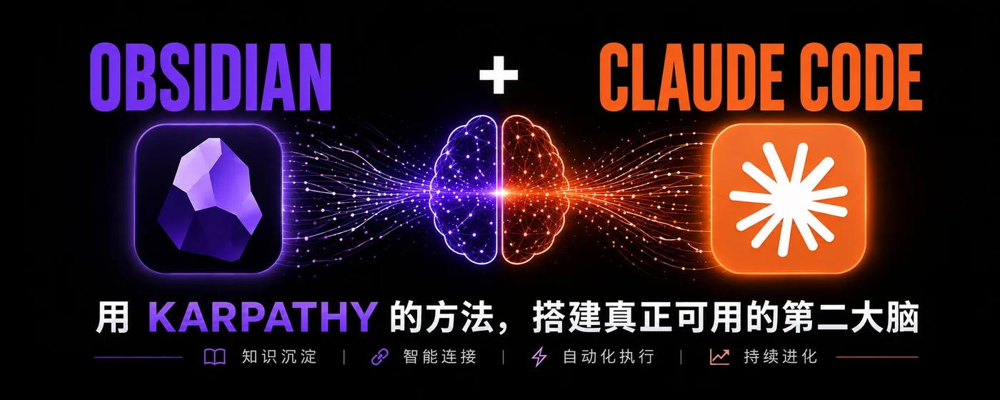
这几年，Obsidian 几乎成了知识管理圈的标配。双链、图谱、本地 Markdown、丰富插件，听起来像是每个信息焦虑者梦寐以求的“第二大脑”。
但大家可能跟我一样，用了一段时间后就会发现：笔记越记越多，标签越建越乱，插件越装越满。最初想打造知识系统，最后却养出了一座更精致的信息垃圾场。
考虑到还有人没有使用过 Obsidian ，今天这篇文章，我将详细记录小白也能快速上手的通过 Obsidian + Claude Code 组合，用 AI 大神 Karpathy 的方法搭一个真正可用，并且能实现复利增长的第二大脑。
先跟大家介绍一下，Karpathy 在4月份的时候，提出过一个叫做“LLM Wiki”的知识库构建模式。
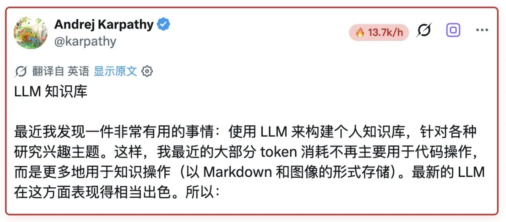
核心思路一句话：让 Claude Code 替你维护 Wiki
他写了一份文档，把整套系统拆成了三层：一层放原始素材，一层放 AI 整理后的知识，还有一层是规则文件，告诉 AI 该怎么维护这套东西。操作也就三种：录入、查询、修复。
那具体该怎么做呢？
第一步：我们首先需要新建一个仓库
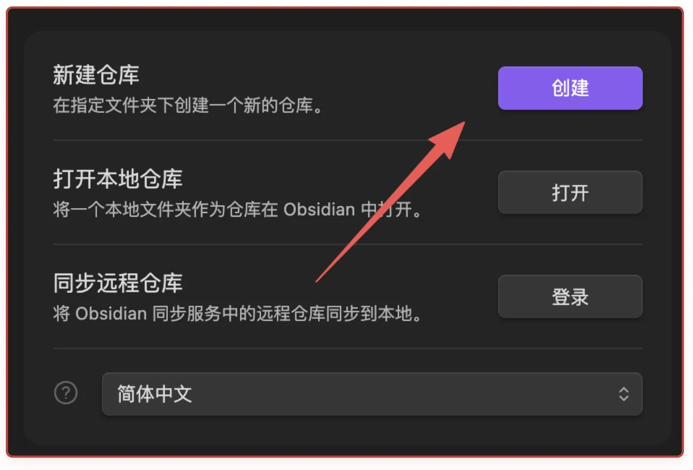
第二步：进入这个文件夹，终端打开 Claude Code
或者我推荐自己在用的另一种，通过使用插件的方式。大家如果已经安装过，可以直接跳到第三步。
先在设置里关闭“安全模式”。
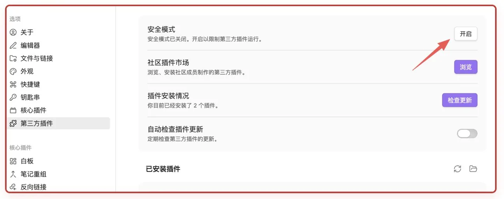
然后浏览插件市场，输入“claudian”，安装插件后启用。
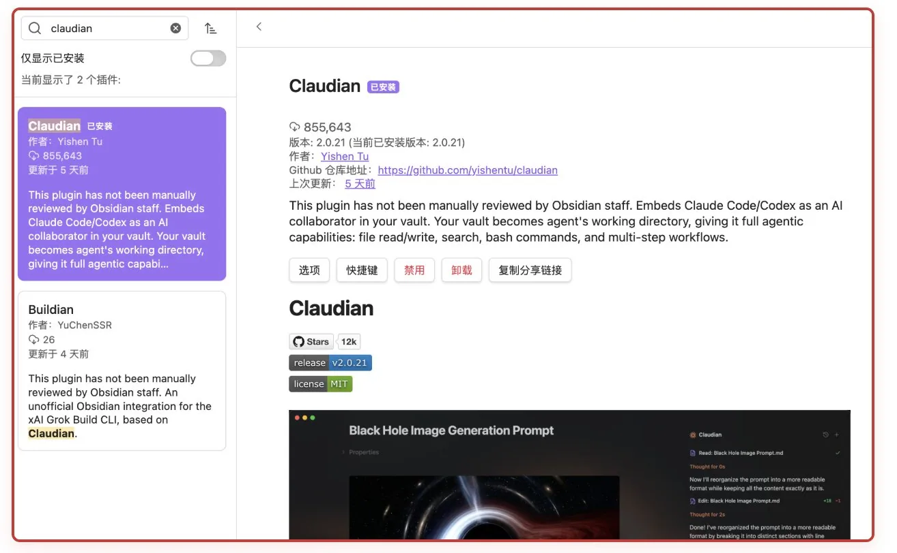
然后这个时候可以看到，第三方插件里，多了一个我们已经安装好的“claudian”插件，然后在右边的设置里，选中我们需要配置的Agent。
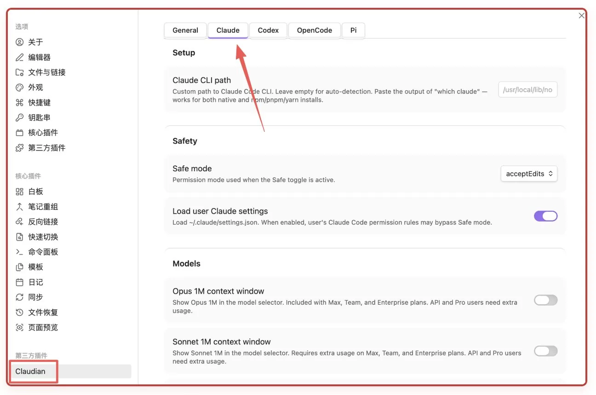
如果我们使用的是第三方的中转，我们还需要在Environment里，按要求填入需要的配置参数。
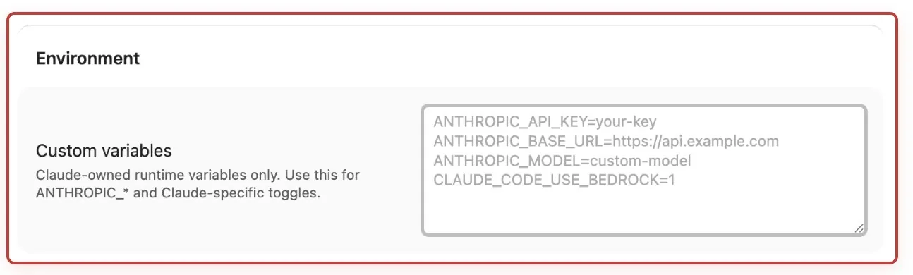
配置好之后，我们点击左边的机器人🤖按钮，就可以看到右边打开了内置的Claude Code 聊天窗口。
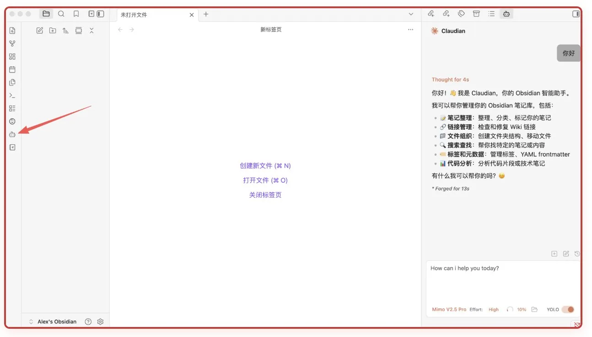
第三步：把 Karpathy 的规则文档放进来
前面提到他写了一份文档，具体位置在：
https://gist.github.com/karpathy/442a6bf555914893e9891c11519de94f
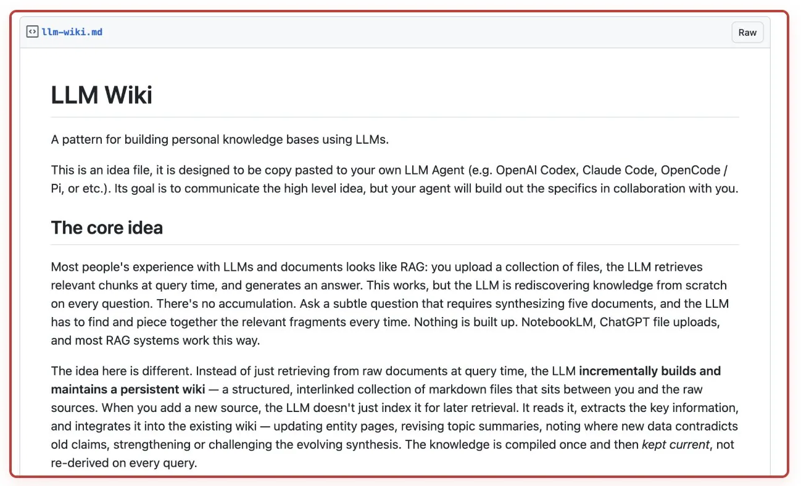
然后我们将文档下载下来，放到现在创建的笔记仓库里。然后在 ClaudeCode 中，输入：
现在请你根据 llm-wiki.md 帮我初始化知识库，并教我如何使用
等他初始完，大家可以看到我们左边的文件列表里，已经有了完整的目录结构。
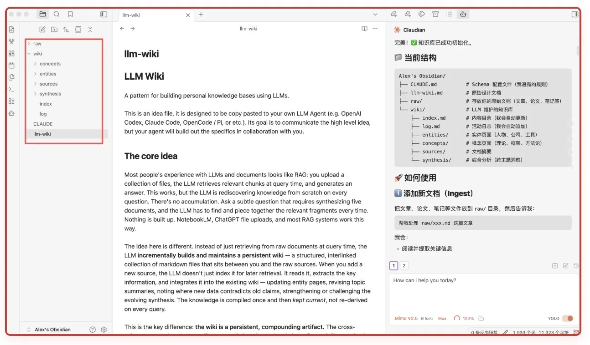
并且每一层结构的用途，以及如何使用，可以在 Obsidian 中很直观的看到，不需要反复切终端。
第四步：实战
既然现在已经搭建好了，为了演示 LLM Wiki 知识库构建模式的优势，我决定往现在的 raw/ 里扔素材。
这里我推荐大家都去安装一个，Obsidian 官方的 Web Clipper 插件，特别好用。
地址：https://obsidian.md/clipper
安装完成之后，在浏览器上打开想要保存到 Obsidian 的网页链接，点击添加到 Obsidian就可以了。默认是放到了新建的 Clippings 的文件夹里边，我们可以在这里修改保存位置，也可以统一放到一个目录后，手动在 Obsidian 中移到 raw/ 里。
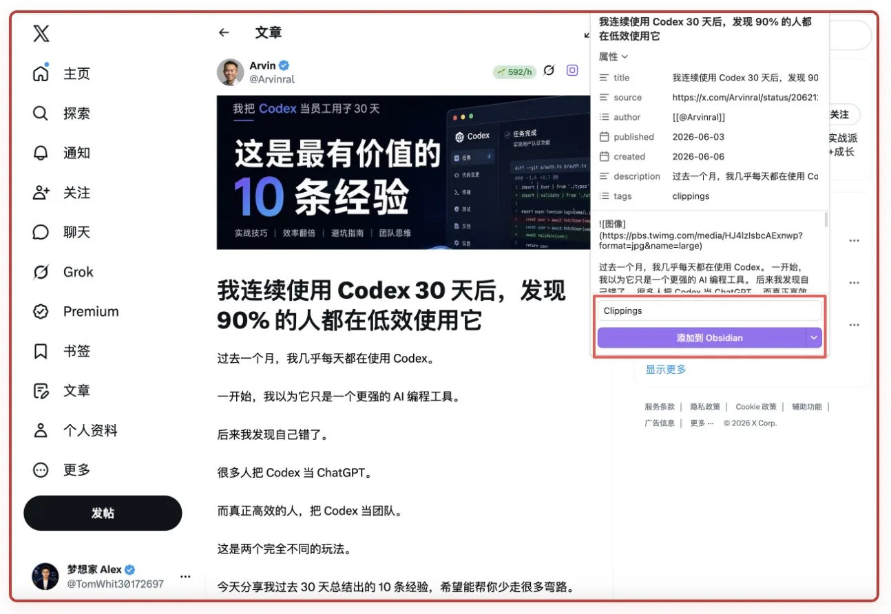
按照这种方式，我把平时在 X 上收藏的书签内容，全部放到 Obsidian 进行分析处理。
然后告诉 Claude Code：
帮我录入最新文章
然后它在检索确定了所有的内容后，我让它按照顺序批量处理。
我总共是录入了37 篇文章，分布在 raw/ 下的 6 个文件夹中。
然后过了一会，它帮我处理好了所有新添加进来的内容。
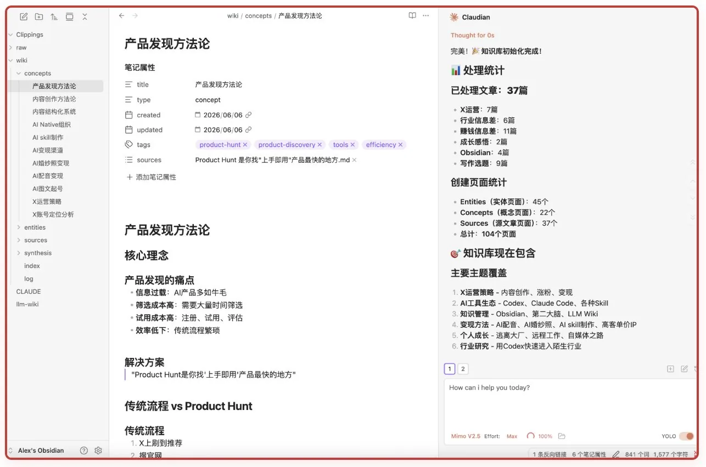
这里给大家介绍一下，Karpathy 提出的 LLM Wiki 工作原理。
不是像我们之前一样，把文章存起来等以后搜索，而是让 AI 先完整阅读，再把知识“编译”进一个持续生长的 Wiki。它会为原文生成摘要，把人物、工具、概念和方法拆成独立页面，并自动建立双向链接。比如录入一篇 Claude Code 的文章后，文章会链接到 Claude Code 页面，而 Claude Code 页面也会记录这篇文章带来的新信息。
每次录入后，AI 还会更新 index.md，登记知识库里有哪些页面，并在 log.md 中记录本次新增和修改。这样，新资料不是孤立地堆进文件夹，而是不断补充、修正和连接已有知识。它和普通 RAG 最大的区别是：知识只需整理一次，之后可以持续积累，而不必每次提问都从原始资料中重新拼装。
录入完成之后，我们可以如何使用知识库，也可以直接请教ClaudeCode。
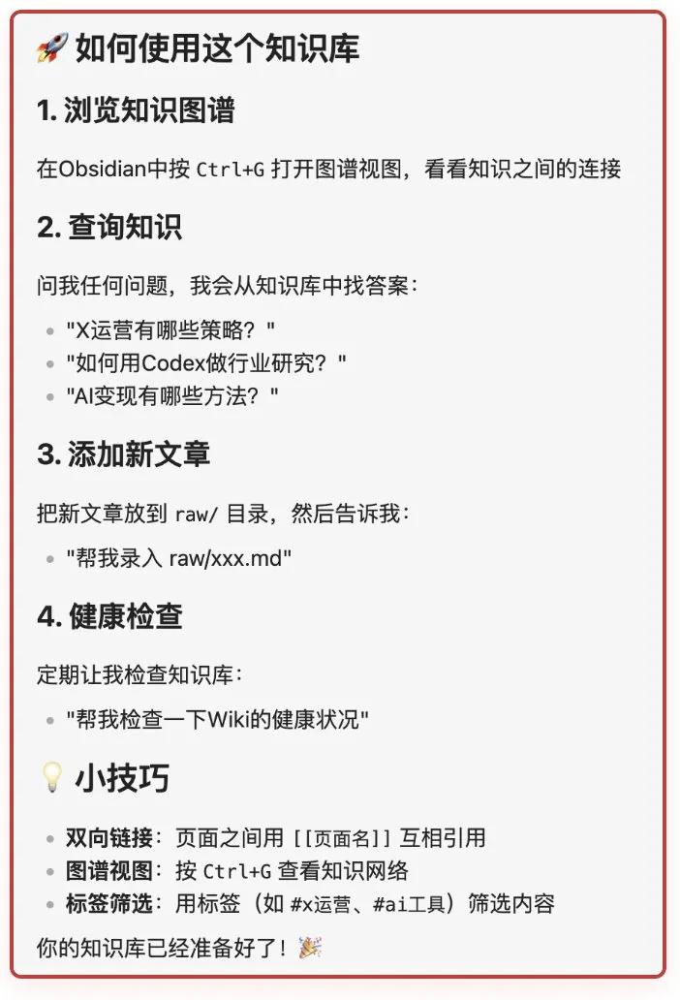
然后打开 Obsidian 的图谱视图，你会看到一堆点和线。点是知识页面，线是它们之间的引用关系。你的笔记之间开始有结构了，并且还是 AI 自动生成的。
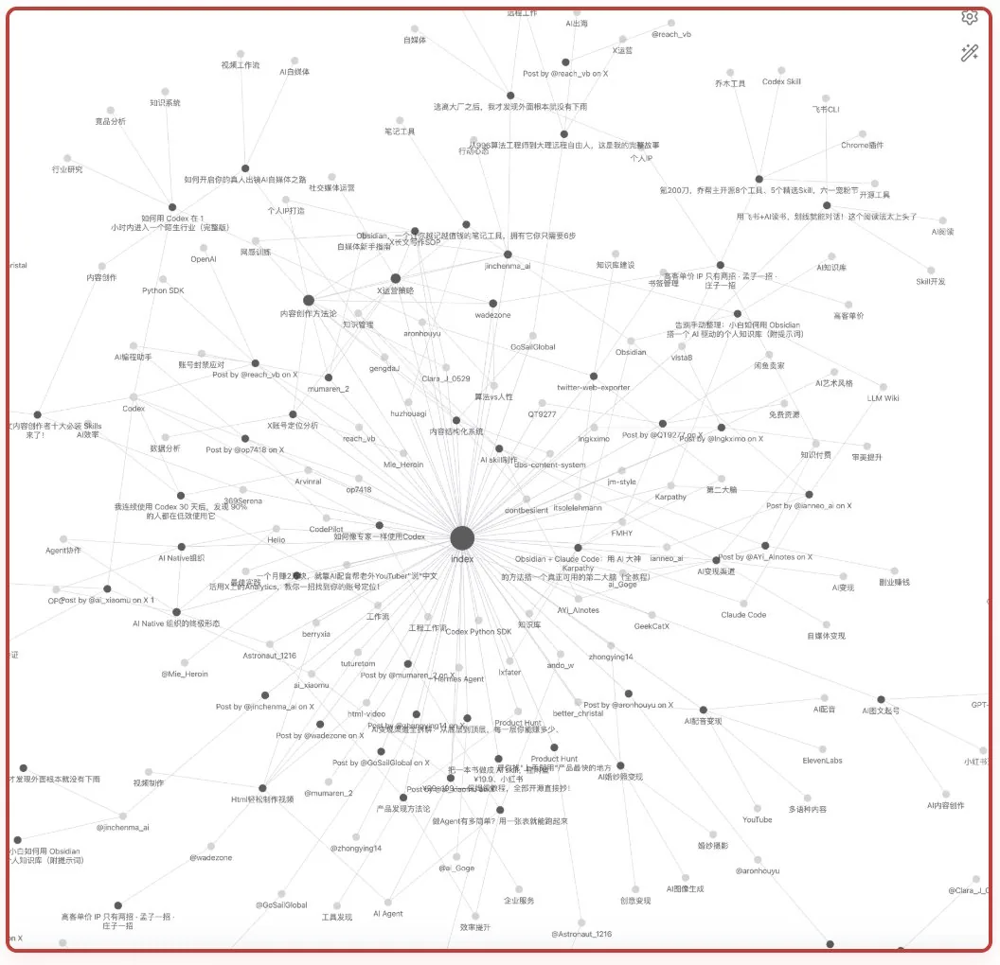
所以以后你只需要不断的往 raw 目录下丢素材，让 Claude 帮你梳理，逐步构建你的“第二大脑”，遇到问题直接问他，比自己到处去翻笔记高效的多。
几点建议，让你使用更高效
最后说几点建议，也是我从X上学习到的。
大家平时可以把自己的日记，复盘，甚至是一些思考等等，也放进去，用不同的子目录做好分类。随着个人资料不断增加，Agent 能读取到的背景会越来越完整，回答也会更贴近你的实际情况。
比如 你就可以让你的 Claude Code 在 CLAUDE.md 加一句：需要了解我的时候去读这个目录下的 Wiki。从那之后这个 Agent 随时能翻你的知识库，你再也不用每次跟它解释你是谁、你在做什么了。
而且更绝的是，你把 wiki/index.md 的地址 丢进任何一个 AI 聊天窗口里就行。这个文件里登记了你所有知识页面的标题和摘要。AI 拿到之后就能在你的知识库里搜了。你问什么，它从你自己的研究里找答案，减少瞎编的概率。
随着资料不断增加，Wiki 也会出现链接失效、内容矛盾、页面孤立和信息过时等问题。Karpathy 把定期维护这一步称为“修复检查”：让 AI 扫描整个知识库，找出没有被其他页面引用的孤儿页面、反复出现但尚未独立建页的概念、相互冲突的说法，以及已被新资料取代的旧结论。
检查完成后，AI 会先生成一份问题报告，再根据你的确认补充页面、修复链接、更新内容。它就像给知识库做定期体检，让 Wiki 不只是越积越多，也能在长期使用中保持准确、连通和可读。
总结
我觉得 LLM Wiki 最有价值的地方，不是让 AI 帮我们写更多笔记，而是让它接手最容易被人放弃的工作：整理、连接和维护。
Obsidian 负责保存，Claude Code 负责整理，而我们只需要决定什么值得留下，并检查 AI 有没有理解错。
这套系统不需要一开始就做得很复杂。先放进十篇你真正读过的文章，完成一次录入、一次查询，再做一次检查。
当它第一次帮你从过去的资料里，找回一条已经忘记的知识，并连接到今天的问题时，你就会明白：
真正的第二大脑，不是存得更多，而是让过去积累的东西，重新为你所用。